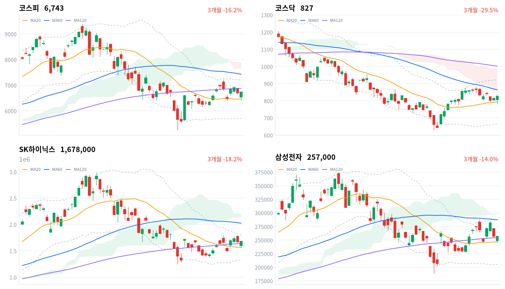
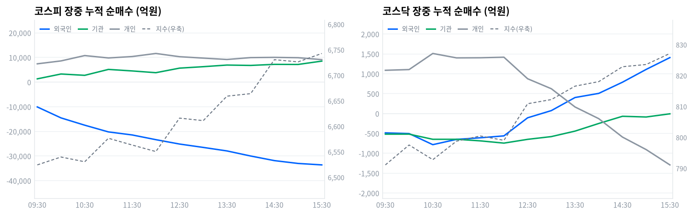

코스피는 개장 직후 급락해 장중 한때 전일 대비 4%대까지 밀렸다. 오후 들어 반등하며 코스피는 +0.68%, 코스닥은 +1.70%로 마감했다. 미국 반도체주가 조정을 받으며 갭다운으로 출발했지만 개인과 기관이 저가 매수에 나서 낙폭을 되돌렸다.
외국인은 코스피에서 3조8,140억원 넘게 순매도(당일 잠정)했지만 개인과 기관이 이를 상쇄하며 지수를 방어했다. 다음 세션에서는 이 저가 매수세가 이어지는지가 관건이다.
코스피 대형 반도체 비중은 다음 세션까지 유지하되 추가로 늘리지는 않는다. 코스피는 개장 초반 급락했다가 반등해 +0.68%로, 코스닥은 +1.70%로 각각 마감했다. 개인이 코스피에서 10,509억원, 기관이 11,711억원을 순매수하며(당일 잠정) 외국인의 3조8,140억원 순매도를 2조2,220억원(58%)만큼 받아냈다.
오늘 낙폭을 만든 것은 미국 엔비디아 실적 경계감발 반도체주 조정이었지만, 정작 코스피를 되돌린 힘은 외국인이 아니라 개인·기관의 저가 매수였다. 반도체와반도체장비 업종 자체는 +0.47%에 그쳤어도 SK하이닉스(6.48조원)·삼성전자(5.44조원)가 거래대금 1·2위를 독식했고, 건설 업종은 정책 기대를 타고 +7.16% 급등했다. 외국인의 코스피 누적 순매도는 장중 내내 방향 전환 없이 확대됐는데도 지수가 반등했다는 것은, 가격과 외국인 수급이 정반대로 움직인 하루였다는 뜻이다.
이 판단이 틀렸다고 볼 조건은 명확하다. 코스피가 20일선(6,460)을 다시 하회하면 오늘의 반등을 일회성 저가 매수로 보고 비중을 추가로 줄인다. 반대로 외국인 순매도 강도가 다음 세션에 눈에 띄게 줄어든다면 반등의 지속성을 신뢰하고 비중 확대를 검토할 수 있다.
| 지수 | 종가 | 등락률 | 시가 | 고가 | 저가 | 전일 종가 |
|---|---|---|---|---|---|---|
| 코스피 | 6,742.74 | +0.68% | 6,535.93 | 6,747.16 | 6,408.82 | 6,696.96 |
| 코스닥 | 827.15 | +1.70% | 806.93 | 827.15 | 781.89 | 813.33 |
코스피는 전일 종가(6,697) 대비 낮은 6,536에서 갭다운 출발한 뒤 개장 초반 장중 저가 6,409까지 밀리며 낙폭을 키웠다. 30분봉 기준으로도 09:00 6,526, 09:30 6,524로 약세가 이어졌다.
낙폭을 줄이기 시작해 11:00 6,577까지 올랐다가 정오 무렵 6,550으로 잠시 눌렸다. 오후 들어 반등이 뚜렷해져 12:30 6,616, 13:30 6,659를 거쳤다. 14:30에는 6,731까지 올라 6,743(15:30)에서 마감했다.
코스닥도 전일 종가(813)보다 낮은 807에서 출발해 09:30 791까지 저점을 낮췄다. 이후 꾸준히 반등해 12:30 811, 14:00 818을 거쳤다. 15:30 827로 마감해 당일 고가에서 장을 마쳤다.
미국 뉴욕증시는 엔비디아 실적 발표를 앞둔 경계감 속에 나스닥이 -0.76%, S&P500이 -0.28%로 밀렸고 엔비디아는 7거래일 연속 하락했다. 이 여파로 국내 반도체 대형주가 개장 초반 급락하며 코스피 낙폭을 키웠지만, 저가 매수세가 유입되며 오후 내내 낙폭을 되돌렸다.

코스피·코스닥·SK하이닉스·삼성전자 3개월 일봉에 이동평균(20·60·120)·볼린저밴드·일목균형표 구름대를 오버레이했다. 상승 캔들은 녹색, 하락 캔들은 적색으로 표시된다.
코스피(6,743)는 이동평균이 혼조 배열인 가운데 일목 전환선(6,809)을 저항으로 두고 20일선(6,460)을 지지선 삼아 마감했다. 전환선을 넘어서면 120일선(6,877)까지 열리고, 20일선이 무너지면 일목 기준선(6,240)까지 밀릴 수 있다.
코스닥(827)은 역배열 속에 일목 전환선(831)을 눈앞에 두고 20일선(795)을 지지선 삼아 마감했다. 전환선을 넘어서면 구름 하단(856)까지 열리고, 20일선이 무너지면 일목 기준선(755)까지 밀릴 수 있다.
SK하이닉스(168만원)는 120일선(164만원) 위에서 지지받으며 스윙 고점(179만원)을 저항으로 두고 마감했다. 저항을 넘어서면 볼린저 상단(180만원)까지 열리고, 120일선이 무너지면 일목 기준선(163만원)까지 밀릴 수 있다.
삼성전자(25.7만원)는 일목 전환선(26.4만원)을 저항으로 두고 120일선(25.5만원)을 지지선 삼아 붙어서 마감했다. 전환선을 넘어서면 반등이 이어질 수 있지만, 120일선이 무너지면 일목 기준선(23.9만원)까지 열린다.
위 레벨은 20·60·120일 이동평균, 볼린저밴드, 일목균형표, 스윙 고저를 기계적으로 계산한 값이며 투자 권유가 아니다.
| 주체 | 순매수(억원) |
|---|---|
| 개인 | +10,509 |
| 외국인 | -38,140 |
| 기관 | +11,711 |
| 주체 | 순매수(억원) |
|---|---|
| 개인 | -1,375 |
| 외국인 | +1,327 |
| 기관 | +156 |
코스피는 외국인이 3조8,140억원(당일 잠정) 순매도하며 하루 종일 매도 우위를 지켰지만, 개인(10,509억원)과 기관(11,711억원)이 나란히 순매수하며 지수를 플러스로 돌려세웠다. 오늘 반등은 외국인이 아니라 국내 투자자의 저가 매수가 만든 결과였다고 볼 수 있다.
코스닥은 외국인(1,327억원)과 기관(156억원)이 순매수(당일 잠정)한 반면 개인(1,375억원 순매도)은 반대 방향이었다. 대형 반도체주 조정을 피해 외국인 자금 일부가 코스닥으로 옮겨간 로테이션 성격이 엿보인다.

누적 순매수(억원), 정규장 09:30~15:30 30분 앵커 기준. 지수는 우측 축.
| 시각 | 코스피(억원) | 코스닥(억원) | ||||
|---|---|---|---|---|---|---|
| 개인 | 외국인 | 기관 | 개인 | 외국인 | 기관 | |
| 09:30 | +7,434 | -10,069 | +1,333 | +1,089 | -485 | -518 |
| 10:00 | +8,611 | -14,515 | +3,301 | +1,107 | -503 | -517 |
| 10:30 | +10,786 | -17,476 | +2,764 | +1,512 | -782 | -647 |
| 11:00 | +9,811 | -20,204 | +5,164 | +1,401 | -649 | -647 |
| 11:30 | +10,389 | -21,435 | +4,546 | +1,404 | -609 | -686 |
| 12:00 | +11,635 | -23,351 | +3,832 | +1,418 | -561 | -743 |
| 12:30 | +10,325 | -25,129 | +5,683 | +876 | -106 | -648 |
| 13:00 | +9,749 | -26,499 | +6,271 | +625 | +75 | -579 |
| 13:30 | +9,193 | -27,925 | +6,930 | +166 | +404 | -441 |
| 14:00 | +9,957 | -29,986 | +6,783 | -128 | +508 | -249 |
| 14:30 | +10,053 | -31,854 | +7,214 | -591 | +789 | -68 |
| 15:00 | +9,914 | -33,004 | +7,175 | -906 | +1,111 | -86 |
| 15:30 | +9,138 | -33,595 | +8,537 | -1,291 | +1,408 | -6 |
코스피 외국인 누적 순매도는 방향 전환 없이 09:01 3,164억원에서 15:21 33,595억원까지 단조롭게 불어났다 — 그날 단조 구간의 양 끝일 뿐 고점·저점은 아니다. 같은 시간 코스피 지수는 낙폭을 줄이며 반등해, 가격과 외국인 수급이 정반대 방향으로 움직인 하루였다. 코스닥에서는 외국인이 12:54를 기점으로 누적 순매도에서 순매수로 전환해 15:21 1,408억원까지 늘었는데, 이는 코스닥이 정오 이후 낙폭을 만회하고 오후 내내 오름세를 이어간 궤적과 같은 방향이었다.
기관 내부에서는 금융투자가 정규장 마지막(15:30) 기준 7,841억원 순매수로 기관 전체 순매수(8,537억원)의 대부분을 차지했고, 연기금등은 같은 시각 251억원 순매수에 그쳐 존재감이 작았다. 그런데 이날 프로그램 매매 전체는 순매도(뒤 표 참고)였다는 점에서, 금융투자 계정의 비프로그램 자기매매가 프로그램 매도분을 상쇄했을 가능성이 있다. 코스닥에서는 기관이 12:03 -745억원까지 순매도를 늘렸다가 매도 강도를 줄여 정규장 마지막 -6억원까지 좁히며 마감했다.
정규장 마지막 관측(15:30) 이후 마감 집계(당일 잠정)까지 외국인 매도는 33,595억원에서 38,140억원으로 더 커졌다. 개인 순매수는 9,138억원에서 10,509억원으로, 기관은 8,537억원에서 11,711억원으로 늘었다 — 동시호가 체결인지 집계 갱신인지는 이 자료로 가릴 수 없다. 다음 거래일에는 외국인 매도가 계속 확대되는지, 개인·기관의 저가 매수가 그만큼 버텨주는지가 확인 대상이다.
| 시장 | 차익 순매수(억원) | 비차익 순매수(억원) | 전체 순매수(억원) |
|---|---|---|---|
| 코스피 | +1,025 | -27,337 | -26,312 |
| 코스닥 | -56 | +1,063 | +1,007 |
코스피는 비차익이 27,337억원 순매도로 전체 프로그램 순매도(26,312억원)를 사실상 주도했고, 차익은 1,025억원 순매수에 그쳐 방향에 큰 영향을 주지 못했다. 비차익은 방향성 바스켓 매매라 기관·외국인의 실제 매도 의도를 반영하는데, 이는 앞서 확인한 외국인의 순매도 방향과 결이 같다.
코스닥은 비차익이 1,063억원 순매수로 지수 상승과 같은 방향이었고 차익은 56억원 순매도에 그쳐 존재감이 없었다. 이는 코스닥 기관의 정오 무렵 매도 강도 완화와도 결이 같아, 오늘 코스닥 강세에 비차익 자금이 실질적으로 가담했음을 보여준다.
| 순위 | 종목/ETF | 구분 | 거래대금 | 비고 |
|---|---|---|---|---|
| 1 | SK하이닉스 | 개별주 | 6.48조원 | - |
| 2 | 삼성전자 | 개별주 | 5.44조원 | - |
| 3 | 반도체 테마 ETF | 테마·롱 | 1.53조원 | 8종 합산 |
| 4 | 삼성전자우 | 개별주 | 1.12조원 | - |
| 5 | SK하이닉스 레버리지 | 레버리지·롱 | 0.48조원 | 2종 합산 |
| 6 | 두산에너빌리티 | 개별주 | 0.43조원 | - |
| 7 | 현대건설 | 개별주 | 0.24조원 | - |
| 8 | 삼성전자 레버리지 | 레버리지·롱 | 0.21조원 | 2종 합산 |
| 9 | 한화머시너리앤서비스홀딩스 | 개별주 | 0.17조원 | - |
| 10 | SK하이닉스 인버스 | 인버스·숏 | 0.14조원 | - |
단위 백만원 원본을 조 단위로 환산. 같은 기초자산 ETF는 방향별로, 같은 테마 섹터 ETF는 테마별로 묶었으며 코스피200·코스닥150 추종 지수 ETF 및 그 레버리지·인버스, 해외 ETF는 제외했다.
위 섹터 스니펫(네이버 대분류, 1일 기준)에서는 건설(+7.54%)·철강소재(+5.01%)·증권(+3.24%)이 상위권을 차지했다. 세부 업종 분류인 kr_industry.json과는 값이 정확히 일치하지 않지만 건설이 양쪽 모두 최상위권이라는 방향은 같다.
kr_industry.json 세부 분류로 보면 건설(+7.16%)은 78종목 중 57종목이 올라 상승 비중이 73.1%에 달한다. 그런데도 유동성 뒷받침이 없어 '좁은 상승·개별종목'으로 분류됐다 — 소수 대형주가 거래대금을 이끌었을 뿐 업종 전체가 고르게 움직이지는 않았다는 뜻이다.
전기유틸리티(+6.42%)·비철금속(+5.60%)·기계(+5.59%)는 상승 종목 비중이 77% 이상으로 나타나 '폭넓은 상승 주도'로 분류됐다. 반도체와반도체장비는 등락률이 +0.47%에 그쳤지만 172종목 중 150종목이 올라 breadth 0.872로 가장 넓은 참여를 보였다 — 지수 기여도는 낮아도 업종 전반이 함께 움직인 하루였다.
삼성전자와 SK하이닉스는 미국 반도체주 조정 여파로 개장 초반 급락했다가 낙폭을 크게 되돌리며 거래대금 1·2위(각각 5.44조원, 6.48조원)에 올랐다. 삼성전자·SK하이닉스 합산 거래대금은 11.92조원으로 반도체 테마 ETF 8종 합산(1.53조원)을 크게 웃돌아, 오늘 반도체 매매는 업종 전체를 겨냥한 패시브 자금이 아니라 개별 대형주를 정조준한 직접 매매였다.
SK하이닉스 레버리지(0.48조원)는 인버스(0.14조원)보다 3.4배 많은 거래대금을 기록했다. 다만 이 표에는 투자 주체 구분이 없어 어느 주체의 베팅인지는 가릴 수 없다.
거래대금 7위에 오른 현대건설(0.24조원)은 오늘 건설 업종 급등의 연장선에 있는 종목이다. 이투데이는 정비사업·PF 금융지원 확대와 정부의 AI 데이터센터 증설 계획이 8월 건설주 강세를 이끌었다고 보도했다.
거래대금 상위에 오른 삼성전자우(1.12조원)·두산에너빌리티(0.43조원)·한화머시너리앤서비스홀딩스(0.17조원)는 오늘 자로 확인된 개별 재료가 리서치 결과에서 나타나지 않아 구체 사유는 확정하지 않는다.
| 지표 | 금리 | 전일比(bp) | 기준일 |
|---|---|---|---|
| 국고채 3년 | 3.830% | -0.6 | 2026-08-25 |
| 국고채 10년 | 4.320% | -1.5 | 2026-08-25 |
| CD 91일 | 2.950% | -1.0 | 2026-08-25 |
| 회사채 AA- 3년 | 4.516% | -0.4 | 2026-08-25 |
| 한국은행 기준금리 | 2.75% | +25.0(전월比) | 2026-07 |
국고채 3년물(3.830%)과 10년물(4.320%)이 나란히 소폭 내렸다. 10년물이 더 크게 내려 3년-10년 스프레드는 49bp로 좁혀지는 불 플래트닝이었고, CD 91일물은 2.950%로 소폭 하락했다.
회사채 AA- 3년물(4.516%)과 국고채 3년물의 신용 스프레드는 69bp로 전일과 거의 같아 신용 심리에 뚜렷한 변화는 없었다. 3년물은 기준금리(2.75%)보다 108bp 높게 거래돼, 시장은 8월 27일 금통위에서 당장 추가 인하를 크게 기대하지 않는 모습이다.
이번 kr/data 수집분에는 원/달러 스팟 환율 소스가 포함되지 않아 이번 호는 국고채 금리만 다룬다. 한국은행 ECOS 기준 금리 데이터는 5개 항목 모두 결측 없이 수집됐다.
법무부 고시에 따르면 신규 취득 자사주는 취득일로부터 1년 이내, 2026년 3월 5일 이전 취득한 기존 보유분은 시행일로부터 1년 6개월 이내인 2027년 9월 5일까지 소각해야 한다. 방송·통신·항공 등 외국인 지분 한도 업종은 3년 처분 유예를 받고, 경영상 목적이 인정되면 매년 이사회 계획서와 주총 승인을 거쳐 예외적으로 보유할 수 있다(법무부, 법률신문 보도). 전달 경로는 유통주식 수를 줄여 코리아 디스카운트를 해소하는 멀티플 경로다.
자사주 비중이 높은 저PBR 대형주 전반이 잠재 수혜로 꼽혀 왔지만, 오늘 데이터에서 이 재료가 특정 종목의 가격에 직접 반영됐다는 근거는 확인되지 않는다. 밸류업 배경 재료로 상시 작동 중인 것으로 보는 편이 맞고, 오늘 가격과 무리하게 연결짓지 않는다. 기존 보유분 소각 시한은 2027년 9월 5일이고 시행령·세부 고시 일정은 미확정이다.
한국은행 금융통화위원회는 7월 16일 기준금리를 2.50%에서 2.75%로 25bp 올렸다 — 2023년 1월 이후 3년 6개월 만의 인상이다. 신현송 총재는 반도체 수출 호조가 만드는 국내 수요·물가 상승 압력과 수도권 주택가격·가계부채발 금융 불균형을 인상 배경으로 꼽았다. 중동발 유가 부담과 원화 약세가 밀어올리는 수입물가도 함께 거론했다(아시아경제 보도). 전달 경로는 할인율과 환율이다 — 긴축 기조가 밸류에이션을 누르는 동시에 원화 강세 요인으로도 작동한다.
국고채 3년물(3.830%)과 10년물(4.320%)이 오늘 전일 대비 소폭 내려, 추가 인상 경계가 이미 상당폭 선반영된 모습이다. 고금리 장기화는 건설·부동산 PF 조달비용에 부담이지만, 오늘 건설 업종은 정책 기대를 타고 오히려 +7.16% 급등해 금리 부담보다 정책 기대가 앞섰다. 다음 금통위는 8월 27일이며, 동결과 추가 인상 중 어느 쪽을 택하는지와 신현송 총재의 물가·가계부채 코멘트가 다음 방향성의 핵심 트리거다.
국민연금 기금운용위원회는 4월 14일 해외투자 환헤지 비율 목표를 15%로 올렸지만, 씨티는 7월 기준 실제 유효 헤지 비율이 4~6%에 그친다고 추정했다(씨티 코멘트, 다음 보도 기반). 원/달러는 최근 1,400원대 중후반을 오갔다. 전달 경로는 원화 매수(달러 매도) 물량이다 — 헤지 비율이 오를수록 원화 강세 압력이, 외국인 순매도로 인한 자본유출 우려는 반대로 원화 약세 압력이 커진다.
오늘 외국인이 코스피에서 3조8,140억원 순매도(당일 잠정)해 원화에는 약세 압력으로 작용할 재료지만, 이번 kr/data 수집분에는 당일 원/달러 확정치가 없어 구체 환율 수치는 다루지 않는다. 외국인 대량 순매도와 국민연금 환헤지 물량이 맞서는 구도로 보는 편이 정확하다. 국민연금 헤지 비율 재조정은 비정기 공시이며, 다음 트리거는 외국인 순매도 지속 여부와 환율의 1,450원대 접근 여부다.